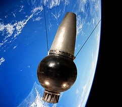
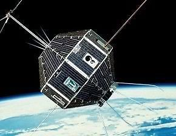
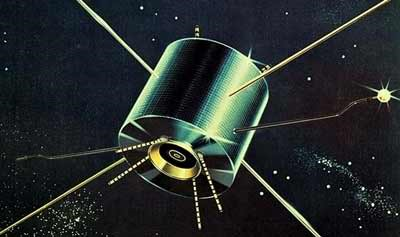
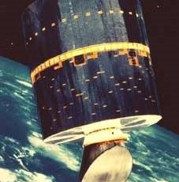
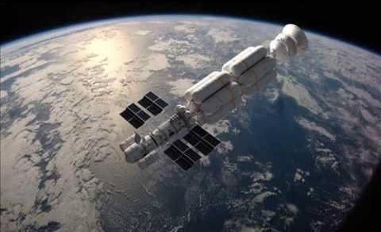
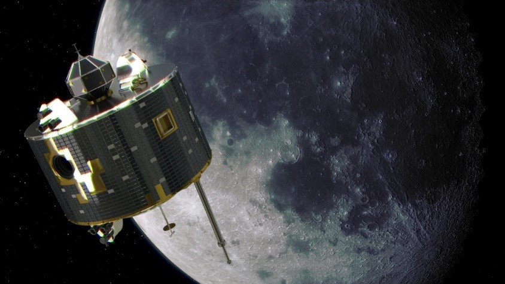
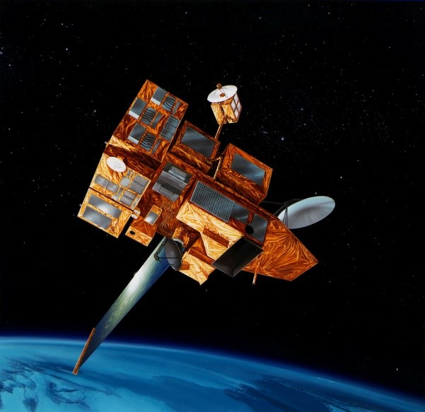
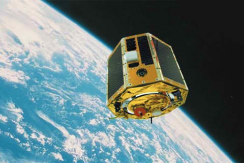
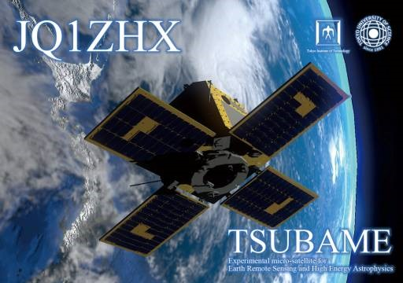
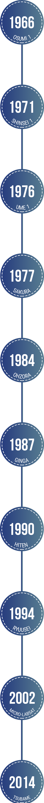

Highlights
Japan
-

Ōsumi (or Ohsumi) is the name of the first Japanese satellite put into orbit, named after the Ōsumi Province in the southern islands of Japan. It was... Read more... -

Shinsei (new star) was the first Japanese scientific satellite launched. Scientific payload included solar radio receivers, cosmic-ray detectors, and ionospheric probes. Read more... -

The ISS (Ionosphere Sounding Satellite) series of satellites was Japan's first ionosphere sounding satellite project. After reaching orbit, they were named Ume. Read more... -

The Communication Satellites Sakura(CS) was used to conduct a variety of communications experiments aimed at actualizing practical satellite communications systems in Japan. Read more... -

Ohzora was a Japanese satellite, launched by ISAS (Institute of Space and Astronautical Science), that made optical observations of the stratosphere and middle atmosphere, Read more... -

The Hiten Spacecraft, given the English name Celestial Maiden[1] and known before launch as MUSES-A (Mu Space Engineering Spacecraft A), part of the MUSES Program, was built by the Institute of Space and Astronautical Science Read more... -

The Orbital Reentry Experiment (OREX) vehicle, renamed Ryusei after launch, was a Japanese spacecraft that was launched by an H-2 rocket from the Tanegashima space station. Read more... -

Micro LabSat, weighing just 50 kg and with dimensions of about 70 cm x 50 cm, is a small satellite launched by the H-IIA F4 rocket from the Tanegashima Space Center (TNSC) on December 14, 2002. Read more... -

Tsubame is a microsatellite project of Matunaga LSS (Laboratory for Space System) at the Tokyo Institute of Technology that combines technical and scientific mission objectives. The 50-Kilogram satellite... Read more...
